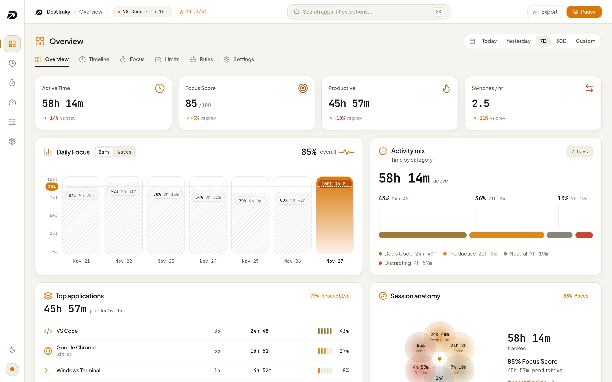

Calm, local-first screen-time & timeline tracking for Windows.
DestTraky combines non-admin Win32 foreground tracking, a zoomable dual-lane timeline,
and a priority regex rule engine inside a 3.5 MB native Rust &
Tauri v2 desktop studio. No accounts, no subscriptions, zero telemetry.
Windows 10 / 11 x64100% Local SQLite WALNo Admin Rights RequiredFree & Open Source
DestTraky/ Overview · 7-Day Focus Studio

Click to inspect full resolution
Installer Footprint
3.5 MB
Native Rust + Tauri v2 vs 150 MB Electron
Cloud Telemetry
0 bytes
Bundled SQLite WAL · 100% offline
Rule Engine
Regex
WindowTitle > AppName > Neutral
Data Ownership
CSV / JSON
One-click export · No account lock-in
Inside the Application
Six focused workspaces, one calm visual language.
Every view in DestTraky is captured directly from the live application — crafted in
Warm Alabaster and Warm Obsidian with hatched score columns, glowing Ember Waves, a
zoomable dual-lane timeline, and an interactive Rule Sandbox.
DestTraky / Overview · Warm Alabaster
Click to zoom screenshot
Engineered for Precision
Everything you need to understand your workday — without the bloat.
Built from the ground up in Rust for sub-1% CPU overhead, accurate idle trimming, and
complete privacy on Windows 10 and Windows 11.
Native Win32 & UWP Tracking
Samples the active foreground window via GetForegroundWindow, resolves
packaged UWP child apps inside ApplicationFrameHost.exe, and caches
native HICON app icons locally as PNGs.
Non-admin · Browser domain parsing · Ignore list
Smart Idle & Fullscreen Awareness
Uses GetLastInputInfo to trim trailing idle seconds accurately,
suppresses false idle during fullscreen videos or meetings, splits sessions cleanly
at midnight, and handles sleep/wake gaps.
Configurable idle threshold · One-click Pause
Score Columns & Ember Waves
Switch effortlessly between hatched pill score columns and a glowing mirrored Ember
Waves visualization, paired with an Activity Mix bar and a 6-petal Session Anatomy
flower chart.
Today · Yesterday · 7D · 30D · Custom ranges
Dual-Lane Timeline & Manual Tasks
Inspect a zoomable (24h / 12h / 6h) dual-lane
strip showing Online / Idle / Offline state above app blocks, plus
+ Log Task for offline deep work or meetings.
28-day heatmap · Instant tag & title search
Priority Regex Rules & Auto-Tags
Deterministic WindowTitle > AppName > Neutral evaluation with
substring and regex rules, custom #tags, automatic schedule tags
(#Work Hours, #After Hours, #Weekend), and
a live sandbox.
Priority-ordered · Test before saving
Focus Pomodoro, Limits & ⌘K Palette
Built-in Pomodoro timer with streak tracking, daily app and category budgets with
warning/exceeded toasts, slim icon rail navigation, and instant Ctrl+K
search across apps and actions.
Warm Alabaster & Warm Obsidian themes
Try It Live
Interactive Priority Rule Sandbox
Test how DestTraky classifies any Windows process and window title in real time using
strict WindowTitle > AppName > Neutral priority matching and
automatic schedule tags.
Live Rule Evaluator
PRIORITY: WINDOW TITLE (REGEX / SUBSTRING) > APP NAME > NEUTRAL
Productive
matched via TITLE REGEX PR #\d+|pull/\d+ (priority 40)
#code-review#git#Work Hours
Why DestTraky
Built for people who value speed, accuracy, and data ownership.
See how DestTraky compares against cloud-first time trackers and heavyweight Electron
desktop apps.
Capability
DestTraky v1.0.0
Cloud Trackers (RescueTime, Toggl)
Heavy Electron Trackers
Price & License
100% Free & Open Source
Monthly subscription
Free / Paid tiers
Windows Installer Size
3.5 MB Native (Rust + Tauri v2)
80–180 MB
100–250 MB+
Storage & Privacy
100% Local SQLite WAL
Cloud-first servers
Varies
Regex Rules & Live Sandbox
Built-in (Priority Regex)
Limited / Paid tier
Rarely built-in
Dual-Lane Timeline & Manual Tasks
Built-in (24h / 12h / 6h)
Paid add-ons
Partial
Account & Telemetry
Zero accounts · Zero telemetry
Account required
Varies
Free Download for Windows
Install in seconds. Track privately forever.
Runs silently in your Windows 10/11 system tray with no administrator rights required.
Choose the standard installer or the zero-install portable binary.
Windows EXE Setup (Recommended)
3.5 MB
Standard Windows 10 & 11 (64-bit) NSIS installer with Start Menu shortcut,
optional login autostart, and clean uninstaller.
git clone https://github.com/Waqar-743/DestTraky.git && cd DestTraky && pnpm install && pnpm tauri dev
Open-Source Architecture
Clean Rust core, native Win32 layer, and a crisp React studio.
Auditable from first byte to last — inspect every line of the tracking engine, rule
matcher, and SQLite schema directly on
GitHub.
Desktop Runtime
Tauri v2 & Rust
Built with Tauri v2
and Rust
for native system tray integration, autostart, single-instance locking, and a tiny
3.5 MB installer.
Core Engine
SQLite WAL & Rule Engine
Pure Rust workspace crate (pulsetrack-core) with bundled
SQLite WAL,
deterministic priority regex categorization, focus streaks, and 22 unit tests.
Windows Native Layer
Non-Admin Win32 APIs
Uses GetForegroundWindow, GetLastInputInfo, UWP child
window resolution, fullscreen detection, and local HICON to PNG icon
caching.
Visual Studio
React 18, TypeScript & SVG
Responsive frontend powered by React, TypeScript, Vite, Recharts, and bespoke SVG
visualizations (Hatched Columns, Ember Waves, and Session Flower).
Frequently Asked Questions
Common questions about DestTraky
Everything you need to know about privacy, Windows permissions, data export, and
system requirements.
Yes. DestTraky stores every tracked session, categorization rule, tag, focus cycle,
and daily limit locally on your Windows PC inside a bundled SQLite WAL database.
There are no user accounts, no cloud servers, and zero telemetry.
No. DestTraky runs with standard user permissions using Win32 APIs
(GetForegroundWindow and GetLastInputInfo) and resolves
packaged UWP apps hosted inside ApplicationFrameHost.exe without
needing elevation.
Unlike cloud subscriptions or 100–250 MB Electron apps, DestTraky is 100% free
and open source, installs in just 3.5 MB via Rust and Tauri v2, includes
a priority regex rule engine with a live sandbox, and keeps every
byte of your activity history on your own machine.
Yes. Export any selected date range to CSV or JSON with one click from the top bar
or Settings view, or query your local SQLite database directly at any time.
Yes. Fullscreen video playback and presentations suppress false idle detection,
trailing idle seconds are trimmed accurately, multi-day sessions split cleanly at
midnight, and sleep/hibernate gaps are automatically detected.
DestTraky supports 64-bit Windows 10 and Windows 11 (requiring Microsoft Edge
WebView2, preinstalled on Windows 11). Grab either the 3.5 MB EXE setup or the
14 MB portable executable on
GitHub Releases.